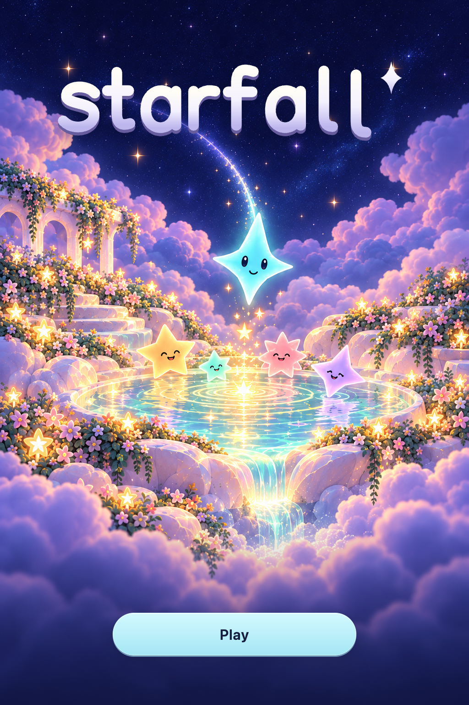

Starfall · Cover refinement 04 · October 17, 2026Starlight Garden
The selected central spring, with more flowered terraces and soft garden detail. The arriving star and gathering pool remain the focus. The actual SVG wordmark and a single Play action sit above a separate, text-free illustration.

Static design preview; Play is not connected to gameplay. No app assets replaced. Generated artwork remains concept art; native layout, animation and device accessibility are unverified.